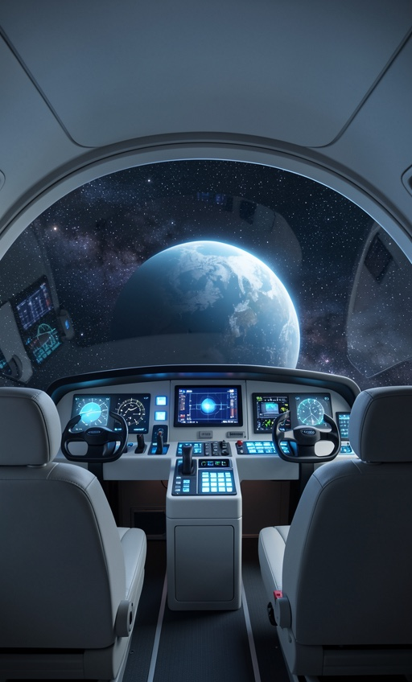
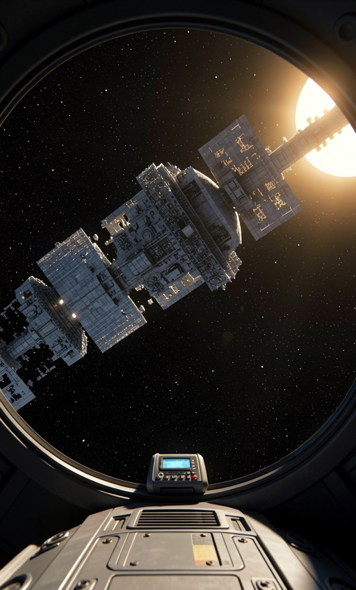
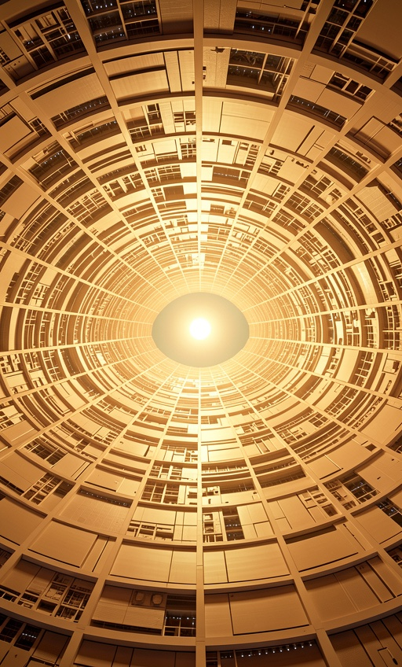
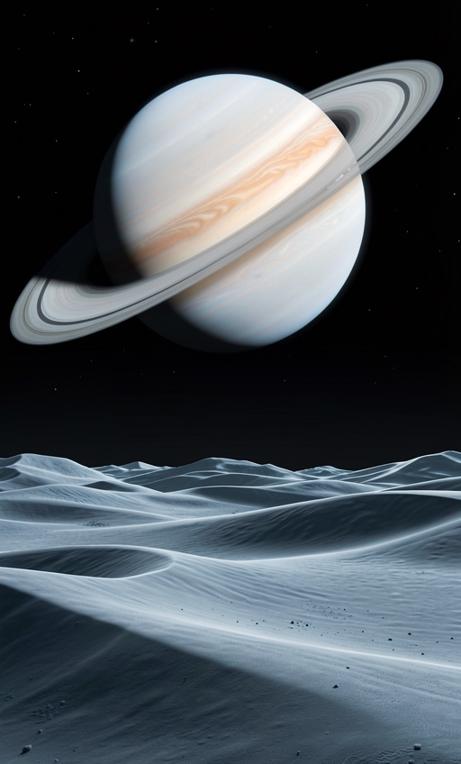
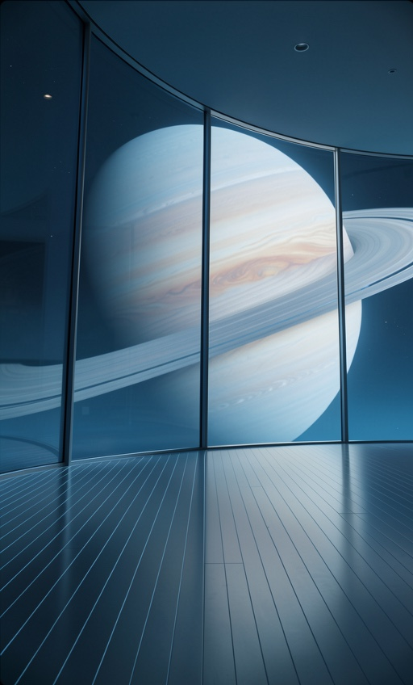
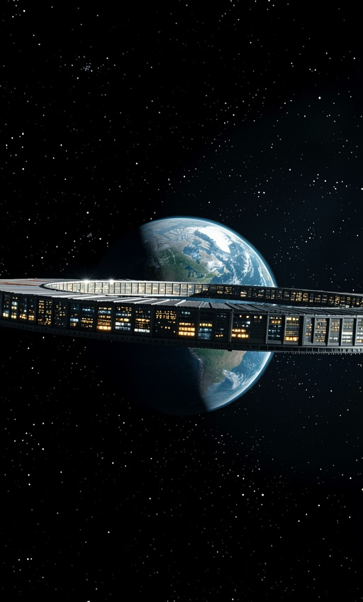

Every clip starts on the hallway plate and is pinned to the destination on the left. Generated 2026-08-12 21:45.
the camera moves down the dim central hallway to the door at the far end of the hallway, the door opens onto warm cabin light, the camera walks through into a small shuttle cockpit and settles facing the wide curved canopy, open stars and a distant blue planet ahead through the glass

the camera moves down the dim central hallway to the door at the far end of the hallway, the door opens onto the padded interior of a compact escape pod, the camera moves inside and turns to the round viewport as the station falls away behind, the damaged station shrinking against black space

the camera moves down the dim central hallway to the door at the far end of the hallway, the door opens onto overwhelming golden light, the camera walks out onto a high platform inside a dyson sphere, the enormous curved inner surface rising up and over the horizon in every direction, a small sun burning at the centre

the camera moves down the dim central hallway to the door at the far end of the hallway, the door opens onto soft blue light, the camera walks out onto the surface of an alien moon, pale dust underfoot, an enormous ringed gas giant rising across the whole black sky ahead

the camera moves down the dim central hallway to the door at the far end of the hallway, the door opens onto cool blue light, the camera walks out onto a vast quiet observation deck, a huge ringed planet turning slowly beyond the full-height curved window ahead

the camera moves down the dim central hallway to the door at the far end of the hallway, the door opens onto bright white light, the camera moves forward out of the station into open space and turns slowly, the enormous ring station falling away behind against a blue-green planet
